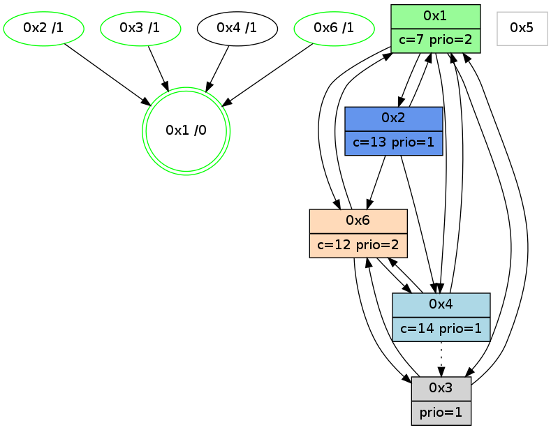

>> << IDX [start] -100 -25 -5 +0 +5 +25 +100 [1030.13208103]
 Previous packets
----------------------------------------------------------------------
1025.210990 beacon01(adaf) #0 coord=01,02,05,03,04,06 cycle=432.0ms assoc
-- color-indic=1 64 8f 5c
1025.220952 beacon02(adaf) #0 coord=01,02,05,03,04,06 cycle=432.0ms assoc 64 de a3
1025.230951 beacon05(adaf) #0 coord=01,02,05,03,04,06 cycle=432.0ms assoc 64 78 89
1025.240951 beacon03(adaf) #0 coord=01,02,05,03,04,06 cycle=432.0ms assoc 64 e4 ad
1025.250951 beacon04(adaf) #0 coord=01,02,05,03,04,06 cycle=432.0ms assoc 64 42 87
1025.260952 beacon06(adaf) #0 coord=01,02,05,03,04,06 cycle=432.0ms assoc 64 36 9b
1025.272699 [Hello(4): seq=832 sym=1,6 asym=3 sysInfo=hasWarning stat=1:1,13,4,0/6:8,1,11,5/3:10,10,2,1]
1025.275310 [Color(2) seq=218 @0:0 color=13 prio=1 c=7,c,e;1,4,6,8,9,b]
1025.276903 [Color(3) seq=160 @0:0 prio=1 c=7,c,d;1,4,6,8,9,b,e]
1025.278855 [Color(1) seq=258 @0:0 color=7 prio=2 c=1,4,6,8,9,b,c,d;0,2,3,5,a,e]
----------------------------------------------------------------------
1025.703100 beacon01(adaf) #0 coord=01,02,05,03,04,06 cycle=432.0ms assoc
-- color-indic=1 64 57 18
1025.713061 beacon02(adaf) #0 coord=01,02,05,03,04,06 cycle=432.0ms assoc 64 06 e7
1025.723061 beacon05(adaf) #0 coord=01,02,05,03,04,06 cycle=432.0ms assoc 64 a0 cd
1025.733061 beacon03(adaf) #0 coord=01,02,05,03,04,06 cycle=432.0ms assoc 64 3c e9
1025.743062 beacon04(adaf) #0 coord=01,02,05,03,04,06 cycle=432.0ms assoc 64 9a c3
1025.753061 beacon06(adaf) #0 coord=01,02,05,03,04,06 cycle=432.0ms assoc 64 ee df
1025.763936 [Hello(1): seq=732 sym=2,4,6 sysInfo=hasWarning,coloring-mode-on,ColoringModeRequestCalled stat=2:3,4,10,3/4:11,0,8,0/6:2,0,1,4]
1025.766465 [Hello(2): seq=1320 sym=6,1,4 sysInfo=hasWarning stat=6:12,8,14,3/1:10,9,8,0/4:8,0,1,0]
1025.768472 [Hello(3): seq=830 sym=6,1 sysInfo=hasWarning stat=6:7,3,7,3/1:4,15,13,1]
1025.771215 [STC(2)->1 #0.157 new-neigh,tree-change,inconsistent-stability,stable,to-color d=1]
----------------------------------------------------------------------
1026.195210 beacon01(adaf) #0 coord=01,02,05,03,04,06 cycle=432.0ms assoc
-- color-indic=1 64 93 77
1026.205172 beacon02(adaf) #0 coord=01,02,05,03,04,06 cycle=432.0ms assoc 64 c2 88
1026.215171 beacon05(adaf) #0 coord=01,02,05,03,04,06 cycle=432.0ms assoc 64 64 a2
1026.225173 beacon03(adaf) #0 coord=01,02,05,03,04,06 cycle=432.0ms assoc 64 f8 86
1026.235172 beacon04(adaf) #0 coord=01,02,05,03,04,06 cycle=432.0ms assoc 64 5e ac
1026.245172 beacon06(adaf) #0 coord=01,02,05,03,04,06 cycle=432.0ms assoc 64 2a b0
1026.256889 [Hello(4): seq=833 sym=1,6 asym=3 sysInfo=hasWarning stat=1:2,14,4,0/6:9,1,11,5/3:11,11,2,1]
1026.259484 [Color(2) seq=219 @0:0 color=13 prio=1 c=7,c,e;1,4,6,8,9,b]
----------------------------------------------------------------------
1026.687319 beacon01(adaf) #0 coord=01,02,05,03,04,06 cycle=432.0ms assoc
-- color-indic=1 64 df c7
1026.697280 beacon02(adaf) #0 coord=01,02,05,03,04,06 cycle=432.0ms assoc 64 8e 38
1026.707279 beacon05(adaf) #0 coord=01,02,05,03,04,06 cycle=432.0ms assoc 64 28 12
1026.717281 beacon03(adaf) #0 coord=01,02,05,03,04,06 cycle=432.0ms assoc 64 b4 36
1026.727280 beacon04(adaf) #0 coord=01,02,05,03,04,06 cycle=432.0ms assoc 64 12 1c
1026.737281 beacon06(adaf) #0 coord=01,02,05,03,04,06 cycle=432.0ms assoc 64 66 00
1026.751383 [Hello(6): seq=746 sym=4,1,3 sysInfo=hasWarning stat=4:11,0,3,0/1:13,11,14,1/3:7,3,4,7]
1026.761531 [Hello(1): seq=733 sym=2,4,6,3 sysInfo=hasWarning,coloring-mode-on,ColoringModeRequestCalled stat=2:4,4,11,3/4:11,0,8,0/6:2,0,1,4/3:0,0,0,0]
----------------------------------------------------------------------
1027.179428 beacon01(adaf) #0 coord=01,02,05,03,04,06 cycle=432.0ms assoc
-- color-indic=1 64 1b a8
1027.189388 beacon02(adaf) #0 coord=01,02,05,03,04,06 cycle=432.0ms assoc 64 4a 57
1027.199390 beacon05(adaf) #0 coord=01,02,05,03,04,06 cycle=432.0ms assoc 64 ec 7d
1027.209390 beacon03(adaf) #0 coord=01,02,05,03,04,06 cycle=432.0ms assoc 64 70 59
1027.219390 beacon04(adaf) #0 coord=01,02,05,03,04,06 cycle=432.0ms assoc 64 d6 73
1027.229390 beacon06(adaf) #0 coord=01,02,05,03,04,06 cycle=432.0ms assoc 64 a2 6f
1027.241093 [Hello(4): seq=834 sym=1,6 asym=3 sysInfo=hasWarning stat=1:3,14,4,0/6:10,1,11,5/3:12,12,2,1]
1027.242983 [Color(1) seq=260 @0:0 color=7 prio=2 c=1,4,6,8,9,b,c,d;0,2,3,5,a,e]
1027.245344 [Color(3) seq=162 @0:0 prio=1 c=7,c,d;1,4,6,8,9,b,e]
1027.247349 [Color(2) seq=220 @0:0 color=13 prio=1 c=7,c,e;1,4,6,8,9,b]
----------------------------------------------------------------------
1027.671537 beacon01(adaf) #0 coord=01,02,05,03,04,06 cycle=432.0ms assoc
-- color-indic=1 64 56 af
1027.681498 beacon02(adaf) #0 coord=01,02,05,03,04,06 cycle=432.0ms assoc 64 07 50
1027.691499 beacon05(adaf) #0 coord=01,02,05,03,04,06 cycle=432.0ms assoc 64 a1 7a
1027.701498 beacon03(adaf) #0 coord=01,02,05,03,04,06 cycle=432.0ms assoc 64 3d 5e
1027.711498 beacon04(adaf) #0 coord=01,02,05,03,04,06 cycle=432.0ms assoc 64 9b 74
1027.721498 beacon06(adaf) #0 coord=01,02,05,03,04,06 cycle=432.0ms assoc 64 ef 68
1027.735604 [Hello(6): seq=747 sym=4,1,3 sysInfo=hasWarning stat=4:12,0,3,0/1:14,12,14,1/3:8,4,4,7]
1027.737630 [Hello(1): seq=734 sym=2,4,6,3 sysInfo=hasWarning,coloring-mode-on,ColoringModeRequestCalled stat=2:4,5,11,3/4:11,0,8,0/6:2,0,1,4/3:0,1,0,0]
1027.740355 [Color(6) seq=219 @0:0 color=12 prio=2 c=7,d,e;1,4,6,8,9,b]
1027.741746 [STC(1) #0.158 new-neigh,tree-change,inconsistent-stability,stable,to-color d=0]
----------------------------------------------------------------------
1028.163644 beacon01(adaf) #0 coord=01,02,05,03,04,06 cycle=432.0ms assoc
-- color-indic=1 64 92 c0
1028.173605 beacon02(adaf) #0 coord=01,02,05,03,04,06 cycle=432.0ms assoc 64 c3 3f
1028.183605 beacon05(adaf) #0 coord=01,02,05,03,04,06 cycle=432.0ms assoc 64 65 15
1028.193605 beacon03(adaf) #0 coord=01,02,05,03,04,06 cycle=432.0ms assoc 64 f9 31
1028.203605 beacon04(adaf) #0 coord=01,02,05,03,04,06 cycle=432.0ms assoc 64 5f 1b
1028.213607 beacon06(adaf) #0 coord=01,02,05,03,04,06 cycle=432.0ms assoc 64 2b 07
1028.225209 [STC(6)->1 #0.158 new-neigh,tree-change,inconsistent-stability,stable,to-color d=1]
1028.227296 [Color(2) seq=221 @0:0 color=13 prio=1 c=7,c,e;1,4,6,8,9,b]
1028.229198 [Hello(4): seq=835 sym=1,6 asym=3 sysInfo=hasWarning stat=1:4,15,5,0/6:11,2,11,5/3:13,13,2,1]
1028.231542 [STC(3)->1 #0.158 new-neigh,tree-change,inconsistent-stability,stable,to-color d=1]
1028.232915 [STC(4)->1 #0.158 new-neigh,tree-change,inconsistent-stability,to-color d=1]
1028.234913 [Color(3) seq=163 @0:0 prio=1 c=7,c,d;1,4,6,8,9,b,e]
1028.241786 [Color(1) seq=261 @0:0 color=7 prio=2 c=1,4,6,8,9,b,c,d;0,2,3,5,a,e]
----------------------------------------------------------------------
1028.655753 beacon01(adaf) #0 coord=01,02,05,03,04,06 cycle=432.0ms assoc
-- color-indic=1 64 de 70
1028.665714 beacon02(adaf) #0 coord=01,02,05,03,04,06 cycle=432.0ms assoc 64 8f 8f
1028.675714 beacon05(adaf) #0 coord=01,02,05,03,04,06 cycle=432.0ms assoc 64 29 a5
1028.685714 beacon03(adaf) #0 coord=01,02,05,03,04,06 cycle=432.0ms assoc 64 b5 81
1028.695714 beacon04(adaf) #0 coord=01,02,05,03,04,06 cycle=432.0ms assoc 64 13 ab
1028.705715 beacon06(adaf) #0 coord=01,02,05,03,04,06 cycle=432.0ms assoc 64 67 b7
1028.719833 [Hello(6): seq=748 sym=4,1,3 sysInfo=hasWarning stat=4:13,0,4,0/1:14,13,15,1/3:9,5,5,7]
1028.722850 [Color(6) seq=220 @0:0 color=12 prio=2 c=7,d,e;1,4,6,8,9,b]
1028.728045 [Hello(1): seq=735 sym=2,4,6,3 sysInfo=hasWarning,coloring-mode-on,ColoringModeRequestCalled stat=2:4,5,11,3/4:11,0,8,0/6:2,0,2,4/3:0,1,0,0]
----------------------------------------------------------------------
1029.147862 beacon01(adaf) #0 coord=01,02,05,03,04,06 cycle=432.0ms assoc
-- color-indic=1 64 1a 1f
1029.157824 beacon02(adaf) #0 coord=01,02,05,03,04,06 cycle=432.0ms assoc 64 4b e0
1029.167825 beacon05(adaf) #0 coord=01,02,05,03,04,06 cycle=432.0ms assoc 64 ed ca
1029.177823 beacon03(adaf) #0 coord=01,02,05,03,04,06 cycle=432.0ms assoc 64 71 ee
1029.187823 beacon04(adaf) #0 coord=01,02,05,03,04,06 cycle=432.0ms assoc 64 d7 c4
1029.197824 beacon06(adaf) #0 coord=01,02,05,03,04,06 cycle=432.0ms assoc 64 a3 d8
1029.209501 [Hello(4): seq=836 sym=1,6 asym=3 sysInfo=hasWarning stat=1:5,0,5,0/6:12,2,11,5/3:14,14,2,1]
1029.212100 [Color(2) seq=222 @0:0 color=13 prio=1 c=7,c,e;1,4,6,8,9,b]
1029.213756 [Color(3) seq=164 @0:0 prio=1 c=7,c,d;1,4,6,8,9,b,e]
1029.221263 [Color(1) seq=262 @0:0 color=7 prio=2 c=1,4,6,8,9,b,c,d;0,2,3,5,a,e]
----------------------------------------------------------------------
1029.639972 beacon01(adaf) #0 coord=01,02,05,03,04,06 cycle=432.0ms assoc
-- color-indic=1 64 44 7e
1029.649933 beacon02(adaf) #0 coord=01,02,05,03,04,06 cycle=432.0ms assoc 64 15 81
1029.659933 beacon05(adaf) #0 coord=01,02,05,03,04,06 cycle=432.0ms assoc 64 b3 ab
1029.669932 beacon03(adaf) #0 coord=01,02,05,03,04,06 cycle=432.0ms assoc 64 2f 8f
1029.679933 beacon04(adaf) #0 coord=01,02,05,03,04,06 cycle=432.0ms assoc 64 89 a5
1029.689935 beacon06(adaf) #0 coord=01,02,05,03,04,06 cycle=432.0ms assoc 64 fd b9
1029.700825 [Hello(1): seq=736 sym=2,4,6,3 sysInfo=hasWarning,coloring-mode-on,ColoringModeRequestCalled stat=2:4,5,11,3/4:11,0,8,0/6:2,0,2,4/3:0,1,0,0]
1029.703492 [Hello(6): seq=749 sym=4,1,3 sysInfo=hasWarning stat=4:14,0,4,0/1:15,14,15,1/3:10,6,5,7]
1029.708249 [Color(6) seq=221 @0:0 color=12 prio=2 c=7,d,e;1,4,6,8,9,b]